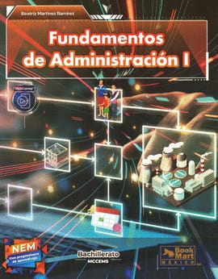
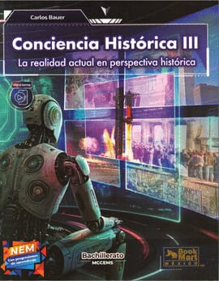
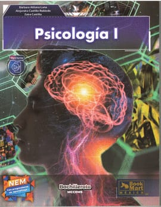
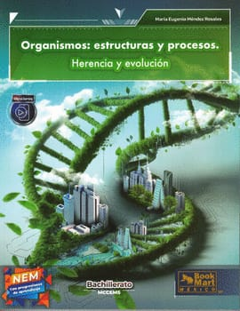
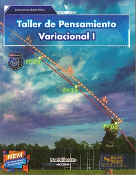

Fundamentos de Administración
Propósito de la Materia
Aportar instrumentos valiosos para tener un amplio conocimiento y perspectivas para incidir en nuestra vida diaria y sociedad; así como tener el conocimiento básico de la administración.

Progresiones del Primer Parcial
- Progresión 1: Perspectivas administrativas.
- Progresión 2: El control y la racionalidad economica.
- Progresión 3: La responsabilidad social.
Contenidos del Primer Parcial
- Etapas del proceso administrativo en las organizaciones .
- Metodos, herramientas, tecnicas y procedimientos de contrl en racionalidad economica.
- Responsabilidad social y principios de la administracion.
Docente: Lic. Lucia Sanchez Garcia
Especialista en administracion publica.
Conciencia Histórica
Propósito de la Materia
Fomentar la comprensión crítica del pasado para entender el presente y construir una identidad social e histórica. .

Progresiones del Primer Parcial
- Progresión 1: .
- Progresión 2: Analiza los procesos sociopolíticos.
- Progresión 3: Comprende el impacto de la globalización.
Contenidos del Primer Parcial
- Metodología de la investigación histórica.
- Movimientos sociales del siglo XX.
- Identidad y patrimonio cultural.
Lic. Jovani Martinez
Historiador e investigador especializado en movimientos contemporáneos.
Psicología
Propósito de la Materia
Estudiar los procesos mentales, sensaciones, percepciones y el comportamiento humano frente a su entorno físico y social.

Progresiones del Primer Parcial
- Progresión 1: Define las corrientes psicológicas.
- Progresión 2: Analiza el desarrollo cognitivo.
- Progresión 3: Identifica factores de inteligencia emocional.
Contenidos del Primer Parcial
- Fundamentos biológicos de la conducta.
- Teorías del aprendizaje y la memoria.
- Personalidad y motivación.
Lic. Bertha Piña
Psicóloga clínica con especialidad en desarrollo adolescente.
Organismos: Estructuras y Procesos
Propósito de la Materia
Comprender la anatomía, el funcionamiento celular y la interacción de los seres vivos con su ecosistema.

Progresiones del Primer Parcial
- Progresión 1: Reconoce los niveles de organización.
- Progresión 2: Analiza el metabolismo celular.
- Progresión 3: Comprende la genética y herencia.
Contenidos del Primer Parcial
- La célula: estructura y función.
- Sistemas del cuerpo humano.
- Biodiversidad y evolución.
Biól. Norberto Solorzano
Biólogo especializado en ecología de ecosistemas y genética de poblaciones.
Comunicación y Sociedad
Propósito de la Materia
Desarrollar habilidades de expresión oral y escrita, así como entender el impacto de los medios masivos en la sociedad actual.

Progresiones del Primer Parcial
- Progresión 1: Identifica los elementos de la comunicación.
- Progresión 2: Analiza el discurso de los medios masivos.
- Progresión 3: Redacta textos argumentativos.
Contenidos del Primer Parcial
- Tipos y barreras de la comunicación.
- Medios tradicionales vs digitales.
- Estructura del ensayo y la reseña.
Lic. Angel Casso
Comunicólogo enfocado en medios digitales y periodismo narrativo.
Taller de Pensamiento
Propósito de la Materia
Fomentar el pensamiento crítico, la resolución de problemas lógicos y la creatividad mediante la estructuración de argumentos sólidos.

Progresiones del Primer Parcial
- Progresión 1: Identifica falacias lógicas comunes.
- Progresión 2: Construye silogismos y deducciones.
- Progresión 3: Aplica el pensamiento lateral.
Contenidos del Primer Parcial
- Lógica formal e informal.
- Estructura de argumentos válidos.
- Técnicas de pensamiento creativo (Brainstorming).
Lic. Clarissa Astello
Especialista en filosofía de la lógica y metodologías de pensamiento crítico.
Conoce al Equipo
Desarrolladores y diseñadores que hicieron posible este sitio web aplicando los conocimientos del Submódulo 2. Pasa el cursor sobre las tarjetas para saber más.